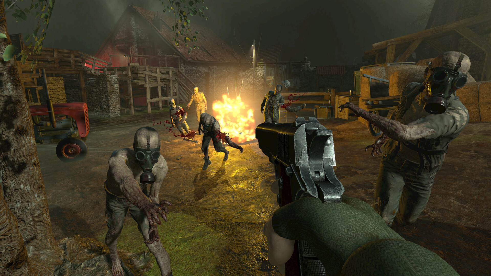
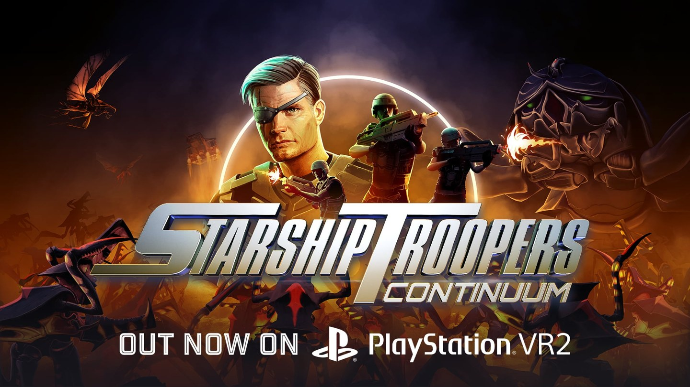
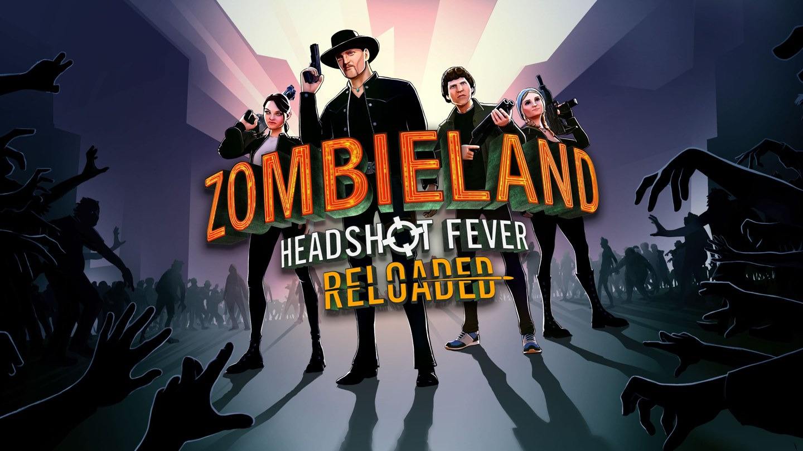
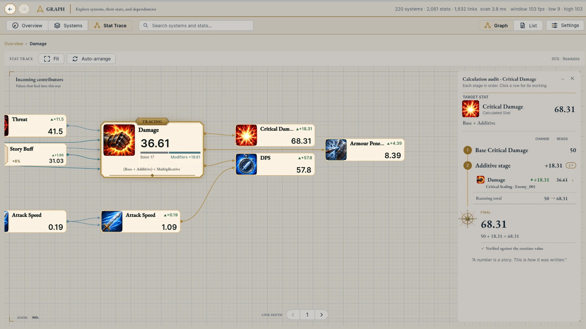
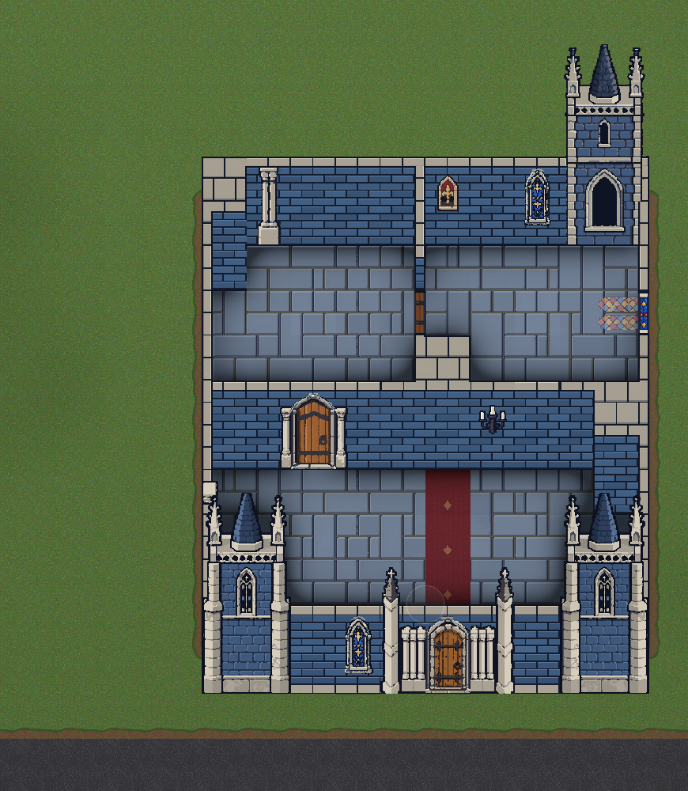

Hi, my name is
Philip Igo.
Unity & C# programmer.
I work on gameplay systems, platform integration and developer tools. I have 8+ years of software engineering experience, including shipped VR games at XR Games and Rebellion. I’m now working freelance.
Based in West Yorkshire, UK Available for Unity programming roles
View selected work ↓
01.
Selected work
Selected shipped work from XR Games and Rebellion, alongside an independent Rocksmith modding project.

Featured project · XR Games / Rebellion
Released on: Meta Quest · Oculus Rift · PC VR (Steam) · PSVR2 (PS5)
Gameplay and systems work across score progression, VR controls, multiplayer and platform services. I worked on the core score service, including multikill modifiers and extensible independent modules.
Contribution details ↗
XR Games · shipped project
Released on: Meta Quest · PSVR2 (PS5)
Integrated and iterated reusable save and social packages, multiplayer features and backend setup, with loading optimisation, profiling and submission support.
- Unity
- Multiplayer
- Profiling
Contribution details ↗
XR Games · shipped project
Released on: PSVR2 (PS5)
Worked on the PSVR2 port ahead of the hardware’s launch, liaising with Sony developer support to resolve platform-specific questions and help the XR Games team deliver a launch title. Also worked on backend setup and independently wrote its reusable save package.
Contribution details ↗Independent modding project
Platform: Windows PC · Rocksmith 2014 Remastered
A Rocksmith mod built on RSMods, connecting Rocksmith to flexible audio routing, external amp simulation, recording and note-by-note practice.
- Game modding
- Audio
- Practice tools
Demo and features ↗02.
Current projects

Asset Store package · In development
StatSystemPro
A Unity Asset Store package in development, with a reusable stats framework and editor tools to inspect relationships, modifiers and runtime changes.

Asset Store package · In development
WorldGeneratorPro
A Unity Asset Store package in development for procedural 2D world generation, with seeded terrain, roads, districts, buildings and interior layouts.
Both packages are in development for the Unity Asset Store. Names and visuals may change.
03.
Experience
I build gameplay systems, editor tools and platform features with a focus on maintainable code, targeted optimisation and stable player experiences.
- Aug 2025 to present
IndependentFreelance Unity developer
- May to Aug 2025
RebellionContract Unity games programmer
- Mar 2022 to Jan 2025
XR GamesUnity games programmer
- May 2020 to Mar 2022
EnquirymaxSoftware / full stack developer
- Feb 2018 to May 2020
GalleosEmbedded app developer
Platform and performance experience
Sony, Steam and Oculus SDKs: saves, achievements, leaderboards, lobbies, invites, DLC, activities, entitlements and multiplayer services.
Profiling loading, memory and CPU bottlenecks while working within VR frame budgets.